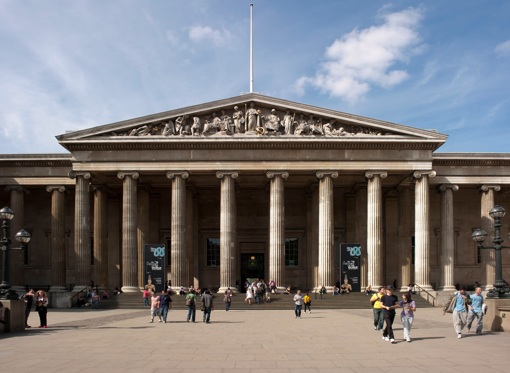
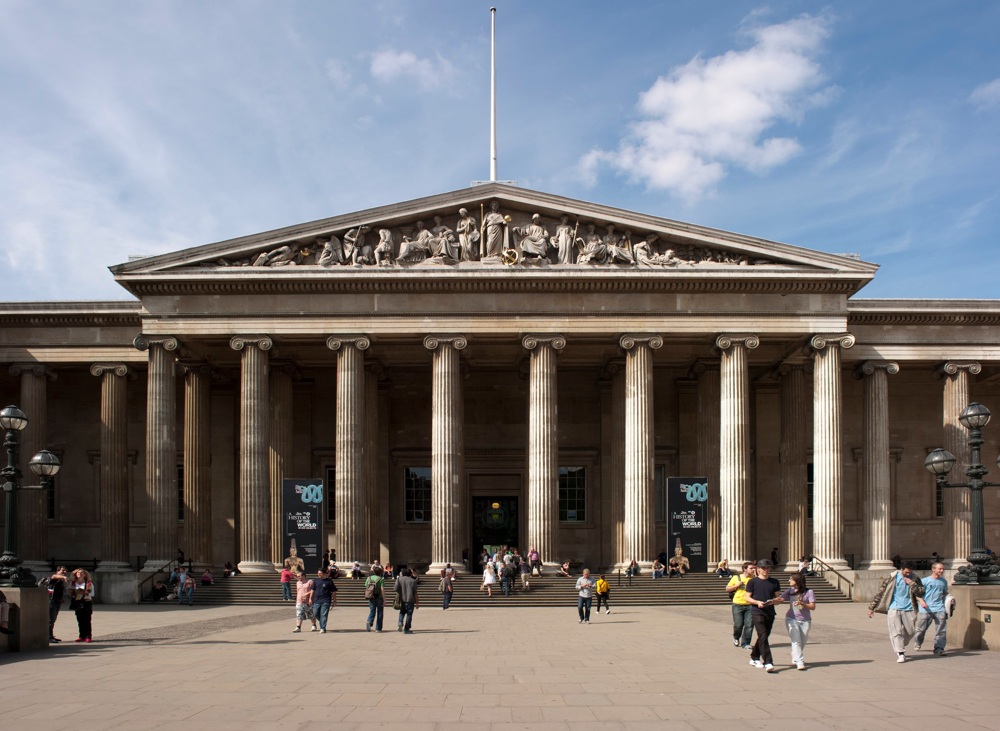

Wielka Brytania, kraina legend i tradycji, urzeka swoim niepowtarzalnym charakterem, gdzie przeszłość splata się z teraźniejszością, tworząc niezwykłą opowieść o wielowiekowym dziedzictwie. To kraj, w którym każdy zakręt drogi kryje w sobie historię i każde wzgórze jest świadkiem epokowych wydarzeń, które kształtowały brytyjską tożsamość.
Podczas wędrówki po malowniczych uliczkach brytyjskich miasteczek, wędrujesz przez labirynty gotyckich kościołów, majestatycznych zamków i eleganckich rezydencji. Architektura Wielkiej Brytanii odzwierciedla bogactwo jej historii, od średniowiecznych fortyfikacji po wiktoriańskie kamienice, tworząc niepowtarzalny krajobraz pełen kontrastów i harmonii.
Jednak Wielka Brytania to nie tylko zabytki i architektura - to także centrum życia kulturalnego, gdzie teatr szekspirowski w Stratford-upon-Avon tętni energią, a muzea takie jak British Museum czy Tate Modern przyciągają miłośników sztuki z całego świata. To kraj, w którym każdy krok jest podróżą przez epoki i style, od renesansowych mistrzów po współczesnych artystów.
Brytyjska kuchnia, choć często krytykowana, kryje w sobie niezwykłe smaki i aromaty, od tradycyjnych fish and chips po wykwintne potrawy serwowane w ekskluzywnych restauracjach Londynu. To kulinarna podróż przez regiony i smaki, która pozwala odkrywać różnorodność brytyjskich tradycji kulinarnej.
Wielka Brytania to niezwykłe miejsce, które przyciąga swoim urokiem i bogactwem kulturowym. Niezależnie od tego, czy spacerujesz po dzikich krajobrazach Szkocji, eksplorujesz starożytne zabytki Anglii czy też odpoczywasz na wybrzeżu Walii, Wielka Brytania zawsze otwiera przed tobą drzwi do niezwykłych przygód i inspirujących odkryć. Long live the legacy!
Miasta, które warto odwiedzić
Londyn
Stolica Wielkiej Brytanii, miasto pełne kontrastów i zabytków. Rozpoczynamy naszą podróż od Pałacu Buckingham, oficjalnej rezydencji brytyjskiej rodziny królewskiej, gdzie można podziwiać ceremonie zmiany warty. Następnie udajemy się do British Museum, jednego z najważniejszych muzeów na świecie, gdzie można odkrywać skarby z całego globu, w tym słynne Elginy Marmury. Na koniec nie można zapomnieć o London Eye, olbrzymim diabelskim młynie, z którego roztacza się wspaniały widok na panoramę miasta.
 


Edynburg
Stolica Szkocji, miasto pełne historii, tradycji i niezwykłych krajobrazów. Rozpoczynamy od Zamku Edynburskiego, imponującej warowni, która góruje nad miastem i oferuje niezapomniane widoki na okolicę. Następnie udajemy się do Starego Miasta, znanego z wąskich uliczek, zabytkowych budynków i tajemniczych zaułków, które tworzą niepowtarzalny klimat. Na koniec warto odwiedzić Arthur's Seat, wulkaniczne wzgórze, z którego roztacza się panoramiczny widok na Edynburg i Morze Północne.

Oksford
Miejsce nauki, tradycji i elitarnego szkolnictwa. Rozpoczynamy od Uniwersytetu Oksfordzkiego, jednej z najstarszych i najbardziej prestiżowych uczelni na świecie, gdzie można zwiedzić piękne kolegia, biblioteki i ogrody uniwersyteckie. Następnie udajemy się do Bodleian Library, jednej z największych bibliotek w Europie, która przechowuje cenne rękopisy i księgi z różnych epok. Na koniec nie można zapomnieć o spacerze po Christ Church Meadow, malowniczym parku przylegającym do kolegium Christ Church, gdzie można odpocząć wśród zieleni i spokoju.
Loch Ness
Miejsce tajemnic, legend i niezwykłych krajobrazów. Rozpoczynamy od Loch Ness, głębokiego jeziora znanej z legendy o potworze z Loch Ness, które przyciąga turystów z całego świata w poszukiwaniu tajemnic. Następnie warto odwiedzić Zamek Urquhart, ruiny średniowiecznej warowni położone nad brzegiem jeziora, które oferują piękne widoki na okolicę. Na koniec można wybrać się na spacer po Great Glen Way, szlaku turystycznego biegnącego wzdłuż Loch Ness, który zapewnia niezapomniane widoki na szkockie góry i jezioro.
Cambridge
Miasto nauki, kultury i tradycji, znane z jednego z najbardziej prestiżowych uniwersytetów na świecie. Rozpoczynamy naszą podróż od Uniwersytetu Cambridge, gdzie można zwiedzić słynne kolegia, takie jak Trinity College czy King's College, oraz podziwiać piękne ogrody uniwersyteckie. Następnie udajemy się do Mostu Matematycznego, który stanowi ikonę miasta i miejsce, gdzie studenci tradycyjnie obchodzą zakończenie swoich egzaminów. Na koniec warto odwiedzić Fitzwilliam Museum, jedną z największych galerii sztuki w Wielkiej Brytanii, która posiada imponującą kolekcję dzieł sztuki, od starożytności po współczesność.